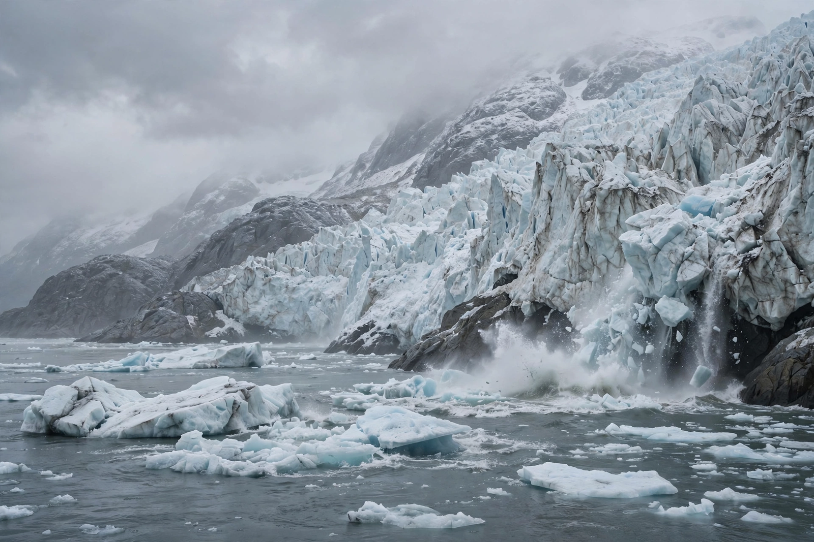

Climate change

Climate change is the long-term shift in Earth's climate, in the present era driven primarily by human activities — chiefly the burning of fossil fuels, which increases heat-trapping greenhouse gas concentrations in the atmosphere.
Effects
Effects include global warming, rising sea levels, ocean acidification, more frequent and intense heatwaves, changes in precipitation, and stress on ecosystems and agriculture.
Responses
International responses centre on the United Nations Framework Convention on Climate Change and the Paris Agreement of 2015, which aims to limit warming to well below 2 °C, preferably 1.5 °C, above pre-industrial levels — through emissions cuts, adaptation, renewable energy and climate finance.
See also: Intergovernmental Panel on Climate Change · Paris Agreement